全世界都在复刻 Apple Music 的 Liquid Glass（液态玻璃）。我拆完它的发布片，更想学的是另一样东西：logo 在动态影像里怎么出场。这一页把它拆成六条可以量化、可以复用的规则，每个数字都来自这支 12 秒成片。
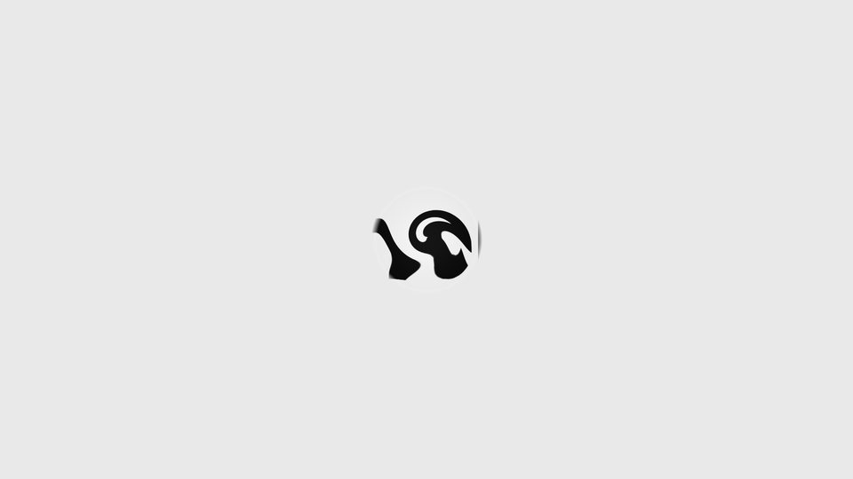
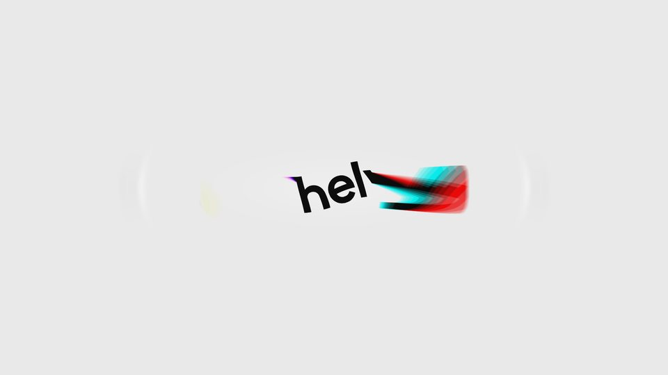
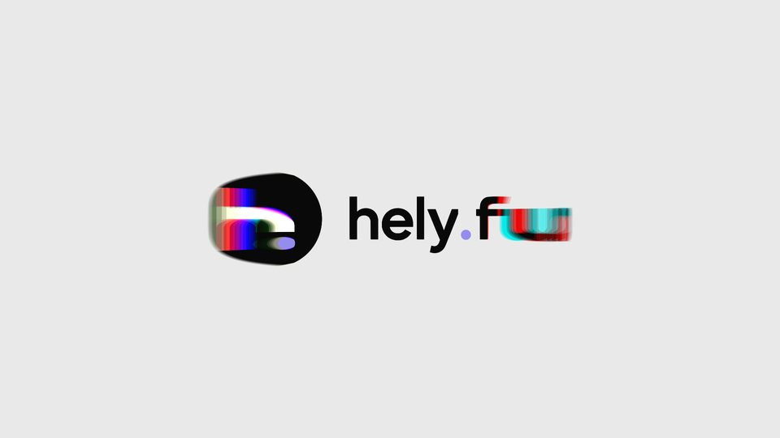
材质：厚边折射、彩虹色散、水一样的出现和消失。打开着色器调参数就能做出来，所以很快就会到处都是。
语法：剪辑点卡音乐节拍；logo 冲击那一帧画面骤然变慢，玻璃退场后再加速冲进硬切；画面里的动作和 logo 同帧对位；冲击波由深到浅散开。
80 BPM，每个镜头 2 拍 = 1.5 秒，到点硬切。切点用 scene>0.25 测出，再按录屏每帧的真实时间戳核对。
每个镜头里，玻璃都走同一条时间线。用光流量参考片发现：画面速度跟着玻璃的节点走。拖动曲线，看每个时刻发生了什么。
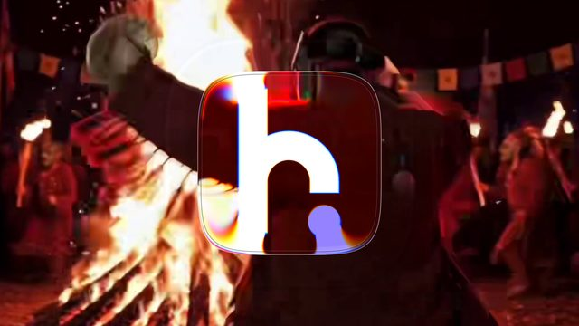
慢动作必须插帧，否则一卡一卡： minterpolate=fps=120:mi_mode=mci:mc_mode=aobmc:me_mode=bidir:vsbmc=1
入点不靠感觉挑：用光流算出素材每帧的运动量，滑动一个 1.5 秒的窗口打分，选动作起点刚好落在 r = 0.15 和 0.75 的那段。logo 始终固定在画面正中，不漂移、不跟拍。
方砖成形后，右侧发出一片薄玻璃：两条挨得很近的亮弧，中间把背景折射错位。出边时快，越走越慢，越走越淡；隔 0.2 秒再发一道更淡的。这一项改了 5 版，直到把参考片逐帧去重、平铺、高通放大才看清。
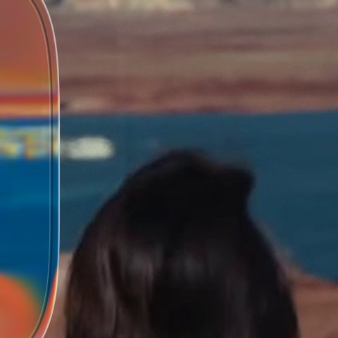
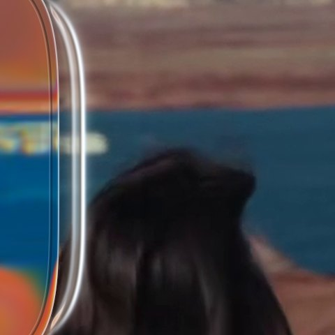
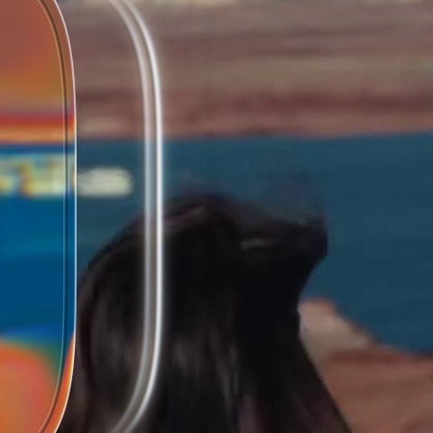
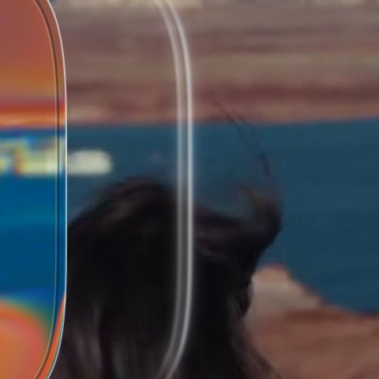
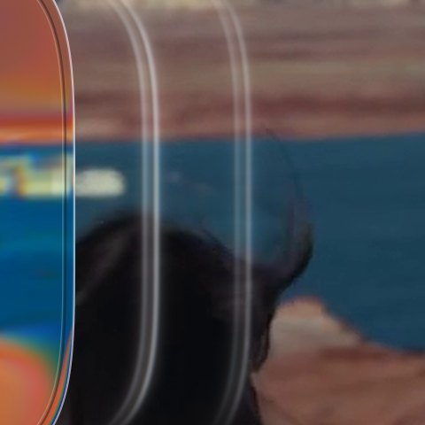
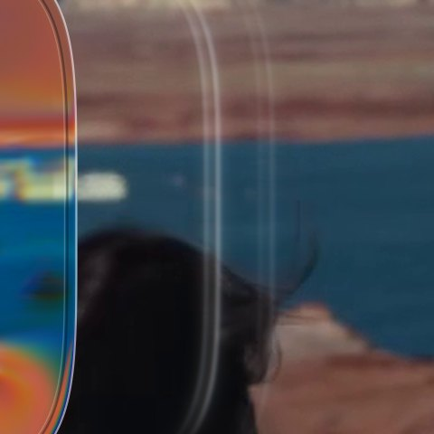
字始终水平，只有透镜里的内容在转。撑开时 R、G、B 三个通道分别拉长，左端偏蓝紫，右端偏红青，形成色散（Chromatic Aberration）。0.6 秒后背景必须逐像素纯净。
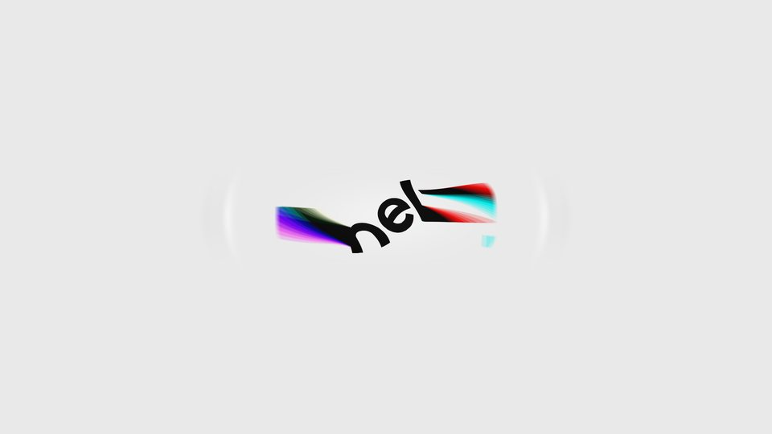
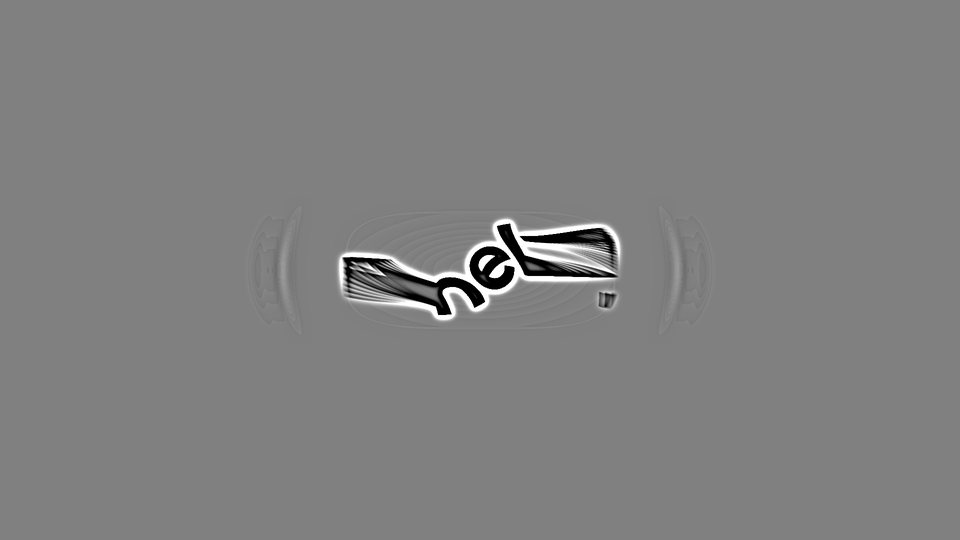
看不清的细节，先换个方法看：灰度减去高斯模糊再放大 8 到 14 倍，淡波纹、柔光泡、灰边全都露出来。拆参考、验自己都用这一招。
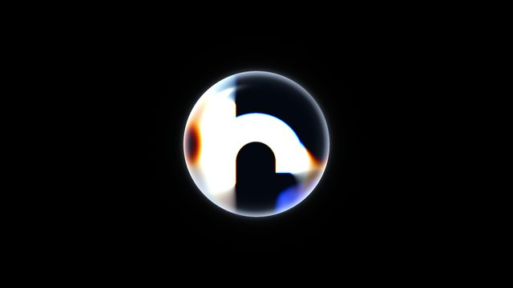
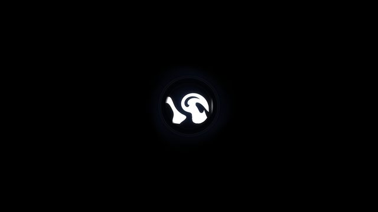
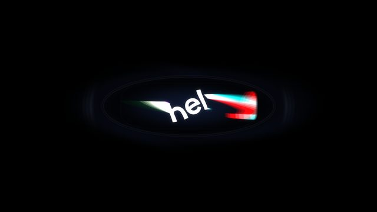
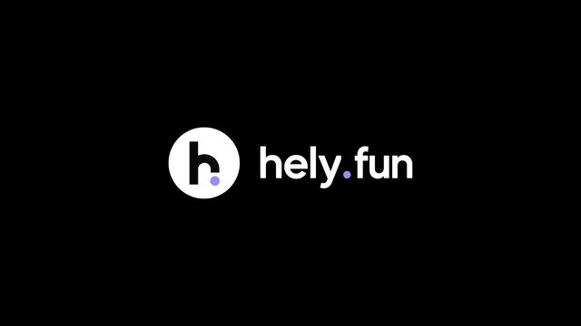
裁出 16:9 画面，解出每帧真实时间，测切点、方砖大小、变速曲线。高通和去重平铺看细节。
不抠 JPEG。圆拟合正圆，h 用矩形 + 圆弧拼，字标用 potrace 描轮廓再拉直。IoU 0.9886。
Farneback 光流 + 1.5 秒滑窗打分，动作起点落在 r 0.15 / 0.75。
插帧到 120fps，按速度曲线积分取样，套缩放矩阵；冲刺段叠 3 子帧运动模糊。
开源 WebGL 内核（MIT），光学数值不动，只加视频背景折射。Playwright 逐帧渲染。
按每帧导出的方砖尺寸画两侧冲击波；字标透镜用 cv2.remap 做漩涡和 RGB 拉长。
代码合成 80 BPM：切点底鼓、水滴玻璃铃、冲刺"呼"、车呼啸随声像移动。
lanczos + accurate_rnd + full_chroma_int + bt709（不加白底发黄）。每段和参考同一时刻并排看。
| 版本 | 意见 | 教训 |
|---|---|---|
| v1 | 图标漂移、折射不够、篝火卡顿 | 执行者会自己"优化"光学，方案里要写死 |
| v2 | 字标左右摇，看不清就切走了 | 苹果字标是透镜展开，不是方砖玻璃 |
| v3 | 玻璃没彩虹 | 执行者为了"干净"偷偷降色散 |
| v5 | 滑板 logo 不要跟人动 | logo 永远固定正中 |
| v6 | 篝火被放大糊了 | 素材用完整画面，按光流踩点 |
| v7 | 震动那一刻要慢动作 | 变速规律要量出来 |
| v8 | 开头有灰，篝火要推拉 | 背景逐像素纯净 |
| v9–10 | "还不如 v8" | 没看清就改，越改越偏 |
| v11 | 进步很多，但没散开、太密 | "厚重"= 线粗 + 辉光 + 玻璃体 |
| v12 | "总算做出来了" | 一次一道，往外走，由深到浅 |
玻璃是皮肤，节拍网格 + 变速 + 动作对位 + 冲击波才是骨架。骨架换上任何品牌的 logo 和画面都成立，可以直接用进之后的 TVC 和品牌广告。
换品牌、换素材、换 BPM 的通用规格见 PLAN.md；完整方法和文件说明见 README.md；每一版的修改单见 plans/。